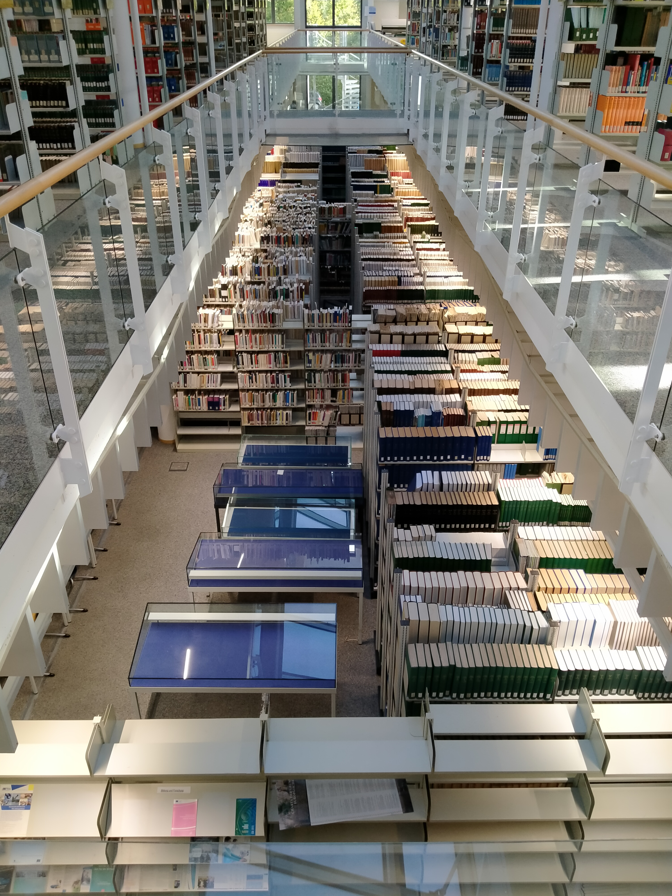
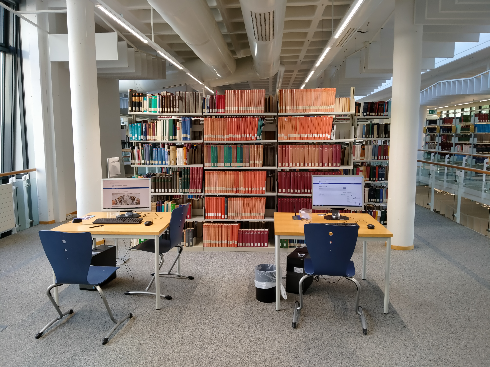
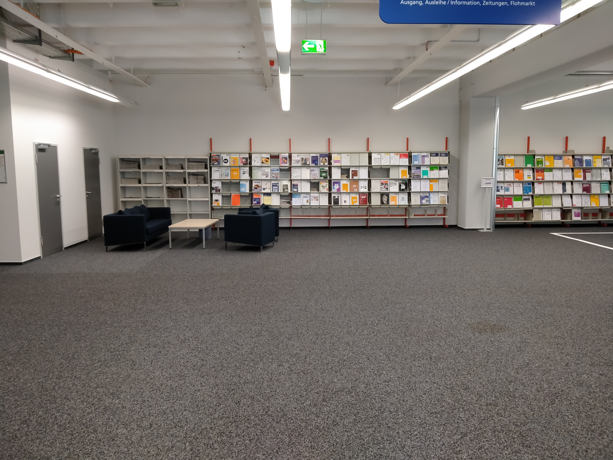

Die Förderung von Nachhaltigkeit und bewusstem Umgang mit Ressourcen ist in der heutigen Zeit von großer Bedeutung. Bibliotheken können hier eine wichtige Rolle spielen, indem sie nicht nur Informationen bereitstellen, sondern auch als Vorbild für nachhaltiges Handeln dienen.
Was davon kann von der Öffenlichkeit genutzt werden?
Prinzipiell alles, nur eben die Online-Sachen nicht von zu Hause. Das hängt damit zusammen, dass die digitalen Angebote über Verträge genutzt werden und die Verträge bestimmen die Gruppe, die darauf zugreifen darf. Verträge werden auch so bepreist, je nachdem, wer darauf zugreifen darf. Wenn es nur 10 Leute sind, ist es billiger, als wenn das 10000 Leute sind. Natürlich sind bei uns die Verträge so, dass alle die zur FernUni gehören, darauf zugreifen können. Das heißt, mit den Mitarbeitenden zusammen, sind wir noch locker bei 70000 plus so ungefähr. Das schwankt ja immer so, aber es ist ziemlich viel, die können alle darauf zugreifen mit ihrer Kennung. Auf unsere Computersysteme aber nicht. Wer zur breiten Öffentlichkeit gehört, der kann das natürlich nicht, aber die Leute können einfach zu uns kommen und in den Räumen der Bibliothek dürfen sie am Rechner, aber auch auf diese Datenbanken zugreifen und das auch alles nutzen.
Gibt es spezielle Angebote für Schulen?
Ja, gibt es, wenn die Schulen das anfragen. Es kommt regelmäßig vor, dass Schulen uns besuchen mit einer Klasse, dann machen wir eine Führung und zeigen mal, wie die Bibliothek funktioniert. Das ist ja bei uns so, wie bei jeder anderen Bibliothek auch. Wenn sie dann Referate erarbeiten müssen, dann haben sie ja schon mal erste Erfahrungen mit Literaturrecherche, zitiere ich richtig, keine Plagiate, alles was dazugehört. Dann können wir auch vermitteln, das können wir auch in einer Art von Schulungen vermitteln, wenn es die Personalsituation zulässt. In der Vergangenheit haben wir das häufiger gemacht, in letzter Zeit auch durch Corona ist es ein bisschen eingeschlafen, da haben wir auch nur Schulen besucht.
Inwieweit kann die Bibliothek an der FernUni Bildung für nachhaltige Entwicklung
unterstützen?
Sehr einfach, indem sie entsprechende Literatur zur Verfügung stellt. Nachhaltige Entwicklung ist ein Thema, das in allen möglichen Bereichen zu finden ist. Da ist etwas im Bereich Technik zu finden, wenn es um Energie geht, das ist in der Wirtschaftswissenschaft zu finden. Das ist auch in der Umweltwissenschaft zu finden, das ist in der Rechtswissenschaft zu finden, wo auch immer, und wir merken ja auch, dass das ein Thema ist, was viele Bereiche derzeit auch betrifft, sodass wir auch in unterschiedlichen Fächern Literatur zu dem Thema haben. Die kaufen wir von uns aus. Es ist auch immer möglich, einen Anschaffungsvorschlag zu machen. Und wenn wir die Literatur kaufen, wird sie auch zum Ausleihen sein. Das sind also Angebote, die wir dann auch unterstützen können. Wir haben also als Bibliothek die Möglichkeit, mit Materialien den Lernprozess zu Nachhaltigkeit zu unterstützen.
Frage: Nachhaltigkeit und die Rolle der Bibliotheken
Die Förderung von Nachhaltigkeit und bewusstem Umgang mit Ressourcen ist in der heutigen Zeit von großer Bedeutung. Bibliotheken können hier eine wichtige Rolle spielen, indem sie nicht nur Informationen bereitstellen, sondern auch als Vorbild für nachhaltiges Handeln dienen. Dies kann sich auf den Energieverbrauch, die Nutzung von Ressourcen und die Förderung umweltfreundlicher Praktiken erstrecken.
Ein weiterer Ansatz zur Förderung der Nachhaltigkeit in Bibliotheken wäre die verstärkte Zusammenarbeit mit Verlagen, um nachhaltig produzierte Druckmaterialien zu fördern. Dies könnte dazu beitragen, den ökologischen Fußabdruck der Bibliotheksbranche zu minimieren.
Insgesamt ist die Förderung von Nachhaltigkeit in Bibliotheken eine wichtige Entwicklung, die die Gesellschaft unterstützen kann, um die Umweltauswirkungen zu minimieren und umweltfreundliche Praktiken zu fördern. Dies ist nicht nur eine ethische Verantwortung, sondern kann auch dazu beitragen, die Bibliotheksbranche zukunftsfähig zu gestalten.
Abschlussgedanken
Die Bibliothek spielt eine zentrale Rolle in der Bereitstellung von Wissen und Informationen. Sie kann nicht nur die Bildung fördern, sondern auch die Nachhaltigkeit und den bewussten Umgang mit Ressourcen unterstützen. Die Herausforderungen der Digitalisierung und des Umweltschutzes erfordern eine kritische Überprüfung der Bibliothekspraktiken. Wir sollten uns stets fragen, wie nachhaltig unser Handeln ist und wie wir zur Lösung globaler Probleme beitragen können. Bibliotheken haben das Potenzial, Vorreiter für eine nachhaltige Zukunft zu sein.